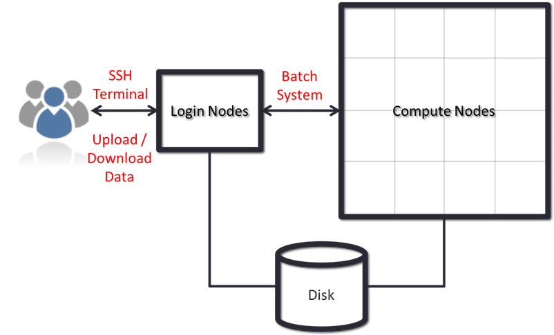

HPC
The benefits of using HPC systems for research often far outweigh the cost of learning to use a Shell and include:
- Speed. With many more CPU cores, often with higher performance specs, than the computers most people have access to HPC systems can offer significant speed up.
- Volume. Many HPC systems have both the processing memory (RAM) and disk storage to handle very large amounts of data.
- Efficiency. Many HPC systems operate a pool of resources that are drawn on by a many users.
- Cost. Bulk purchasing and government funding mean that the cost to the research community for using these systems in significantly less that it would be otherwise.
- Keep personal resources free. By using an HPC system when required your own personal computer can be used for other things to which it is better suited, like email and spreadsheets.
Why use a HPC cluster?
- High Performance Computing (HPC) typically involves connecting to very large computing systems elsewhere in the world.
- These other systems can be used to do work that would either be impossible or much slower on smaller systems.
- HPC resources are shared by multiple users.
- The standard method of interacting with such systems is via a command line interface.
Connecting to a remote HPC system
Making a link from our laptop to the cluster is the first step in using a cluster. We have grown accustomed to expecting a visual display with icons, widgets, and possibly some windows or apps when using a computer while seated (or standing, holding it in our hands, or wearing it on our wrists). This visual display is known as a graphical user interface, or GUI. It is more practical to use a command-line interface, or CLI, to convey commands as plain-text because computer clusters are remote resources that we connect to across sluggish or intermittent interfaces (WiFi and VPNs especially). A command’s output is also shown as plain text if it returns any. The instructions we execute today won’t launch a window to display graphic outcomes.
A CLI can be observed if you’ve ever launched the Windows Command Prompt or the macOS Terminal. You have used the CLI extensively on your local machine if you have previously attended The Carpentries’ courses on the UNIX Shell or Version Control. The sole necessary step in this case is to launch a CLI on a distant machine while taking security precautions to prevent other network users from seeing (or altering) the commands you’re executing or the output the remote machine returns. You can send and receive text and data without worrying about prying eyes by opening an encrypted network connection between two machines using the Secure SHell protocol (also known as SSH).

SSH clients are often command-line programs where the only argument needed is the address of the remote machine. You must also enter your username if it is different from your local login on the distant system. You should set these arguments before selecting “connect” if your SSH client includes a graphical user interface, such PuTTY or MobaXterm. In the terminal, type something like ssh userName@hostname, where “@” separates the user’s ID from the hostname of the remote system. This argument works just like an email address.
A username, password, or pattern must typically be entered when logging into a laptop, tablet, or other personal device to prevent unwanted access. Since logging your keystrokes needs a malicious exploit or physical access in certain circumstances, the risk of someone else intercepting your password is negligible. Anyone on the network is able to log in, or attempt to log in, to systems like gra-login1 that operate an SSH server. Your password is frequently the weakest link in the security chain because usernames are frequently made public or are simple to guess. As a result, a lot of clusters disallow password-based login and demand that you create and configure a public-private key pair with a strong password.
Accessing Software on HPC Systems
- HPC systems often provide a lot of different software packages
- HPC provides ways of selecting and configuring them to get the environment you need.
- It has multiple versions of commonly used software packages installed called Environmental Modules
Cloud vs Cluster
High Performance Computing is not the same as cloud computing.
HPC targets extremely large sets of data and crunching the information in parallel while sharing the data between compute nodes
In HPC one application can be run across a variable number of nodes. We call this vertical scalability.
Cloud computing on the other hand targets “embarrassingly parallel problems” (EPP) with little or no effort is required to separate the problem into a number of parallel tasks.
In a cloud several applications (or, copies of the same application) run on several nodes. We call this horizontal scalability.
HPC systems are generally constructed:
- from many individual computers
- similar in capability to many personal computers
- connected together by some type of network
HPC systems often include several different types of nodes:
- Master(or front-end or login) nodes
- Compute nodes
Nodes
Each node on an HPC system is essentially an individual computer

Scheduler
- To manage the sharing of the compute nodes among all of the jobs, HPC systems use a batch system(scheduler).
- The batch system usually has commands for:
- submitting jobs
- inquiring about their status
- and modifying them
- a typical HPC workflow could look something like this:
- Transfer input datasets to the HPC system (via the master nodes)
- Create a job submission script to perform your computation (on Master nodes)
- Submit your job submission script to the scheduler (on Master nodes)
- Scheduler runs your computation (on the compute nodes)
- Analyse results from your computation (on the login or compute nodes)
Storage and File Systems
- HPC systems often involves very large files, and/or many of them.
- HPC systems have specialized file systems that are designed to meet different needs.
- most HPC systems often have several different file systems available
Connecting to the HPC system
Workflow
The workflow for using HPC typically consists of the following steps:
- Login to HPC login/head node.
- Organize workspace.
- Transfer data and files.
- Install/run software on HPC.
- Test your job interactively on a compute node.
- Submit your job to the batch processor, to run it remotely on a compute node.
- Monitor your job and check your results when it has completed.
Connecting to the HPC system …
Logging onto HPC
- Connecting to an HPC system is most often done through a tool known as “SSH” (Secure SHell)
- To begin using an HPC system we need to begin by opening a terminal.
- SSH allows us to connect to Linux computers remotely, and use them as if they were our own.
- Let’s attempt to connect to the HPC system now:
ssh yourUsername@hpc.ethernet.edu.etConnecting to the HPC system …
Examining the nodes
- Now we can log into the Ethernet HPC system we will look at the nodes.
- There are at least two types of node on the system: login nodes and compute nodes.
- We can use the
lscpucommand to print information on the processors on the login nodes to the terminal:
[remote]$ lscpu- us the total amount of memory available so we use the
head -1command:
[remote]$ head -1 /proc/meminfo
- The
qsubcommand is used to submit a job to the scheduler.
Accessing Software
- Multiple versions of software are available on HPC systems
- The three biggest factors to have multiple versions of software are :
- software incompatibilities;
- versioning;
- dependencies.
- Environment modules are the solution to these problems.
- A module is a self-contained description of a software package
- There are a number of different environment module implementations commonly used on HPC systems: the two most common are TCL modules(Tmod) and Lmod.
- One major difference between the two tools is that Lmod is written in Lua and not TCL.
- Lmod: An Environment Module System based on Lua, Reads TCL Modules, Supports a Software Hierarchy
- Lmod has to translate TCL into Lua
Accessing Software …
- You can use the module list command to see which modules you currently have loaded in your environment.
- If you have no modules loaded, you will see a message telling you so
[remote]$ module list No Modulefiles Currently Loaded.- To see available modules, use
module avail
[remote]$ module avail- To load a software module, use
module load. Hence We can load theopenmpi-x86_64command withmodule load:
[remote]$ module load openmpi-x86_64
[remote]$ which openmpi-x86_64Transferring files
Grabbing files from the internet
- the easiest tool to download files from the internet is
wget. - The syntax is relatively straightforward:
[remote]$ wget https://mesfind.github.io/hpc/files/cfd.tar.gzTransferring with scp
- To copy a single file to or from the remote system, we can use
scp.
[local]$ scp local-file.txt yourUsername@remote.computer.address:- To transfer to another computer:
[local]$ scp file.txt yourUsername@remote.computer.address: pathHow to Connect to SFTP
sftpis an interactive way of downloading and uploading files.- Let’s connect to a remote system using
sftp
[local]$ sftp yourUsername@ethernet.edu.et
Getting Help
- We can see which commands are available with
?orhelp:
sftp> ?sftp> helpCheck Present Working Directory
- To show our remote working directory:
sftp> pwd- To show our local working directory, we add an
lin front of the command:
sftp> lpwdListing Files
- Listing files and directories in local as well as remote system.
sftp> ls- Listing files and directories in local as well on local system.
sftp> llsUpload a File
- we can put single or multiple files in remote system.
- To upload a file, we type
put some-file.txt
sftp> put input.datUpload multiple Files
sftp> mput *.cDownload File
- To download a file we type
get some-file.txt:
sftp> get input.datDownload multiple Files
- Get multiple files on a local system
sftp> mget input.datSwitching Directories
Switching from one directory to another directory in local and remote locations.
on a remote system
sftp> cd test- on a local system
sftp> lcd DesktopCreate Directories
- Creating new directories on local and remote locations.
sftp> mkdir test sftp> lmkdir openmpi- The most basic use of the scheduler is to run a command non-interactively.
- This is also referred to as batch job submission. I
- In this case, a job is just a shell script. Let’s create a demo shell script to run as a test.
#!/bin/bash
# Save with example_job.sh
echo 'This script is running on:'
hostname
sleep 120- To submit this job to the scheduler, we use the sbatch command.
sbatch example_job.sh- To check on our job’s status, we check the queue using the command
sbatch example_job.sh